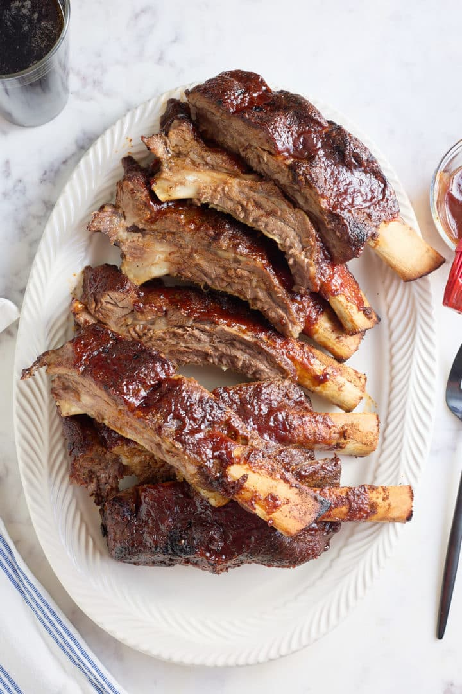

Beef Ribs Baked in Your Oven

Description
Pull out your oven mits, and that kiss the cook apron that grandma gave you.
We're about to throw down like she would.
Lets get to it.
Ingredients
- 6lbs of beef short ribs.
- 1 teaspoon of salt
- 1 teaspoon of pepper
- 1 teaspoon of garlic pepper
- 1 cup teaspoon of your favorite bbq rub - just to ensure that they have plenty of flavor.
Steps
- Rinse the ribs
- Pat dry with paper towels
- Remove membrane from back of the ribs.
- Apply all of the seasoning on both sides.
- Go preheat that oven to 275 to give the seasonings time to soak into the meat.
- Place the ribs in a large baking dish or roasting pan and cover the pan with foil. Bake for 2 hours and 45 minutes to 3 hours, or until the meat is tender.
- Remove the ribs from the oven.
- Increase the heat to broil then put the ribs back in the oven to broil for 5-10 minutes.
- Take the ribs out of the oven and let them cool for 10-15 minutes before serving.
Now take that apron off and stop acting like granny. You're looking up recipes, she already knows what it need!